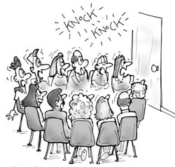

Triskaidekafobie
vrijdag 13 juni 2003 | Zomaar
Nieuw woordje geleerd vandaag op deze vrijdag de dertiende: Triskaidekafobie, van het Grieks: tris (drie) – kai (en) – deka (tien). Angst voor het getal 13. Grappig ;-)
Dictionary.com: Word of the Day
BBCi: Interessant artikeltje
Cartoon: Triskaidekaphobia self-help group
Phobialist: alle fobieën op een rijtje
